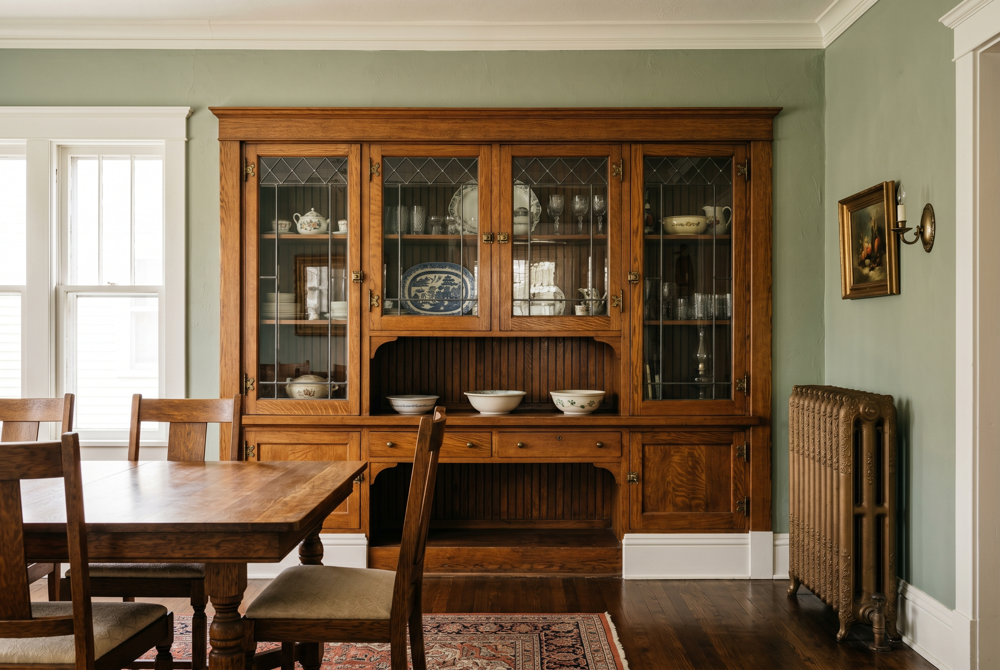
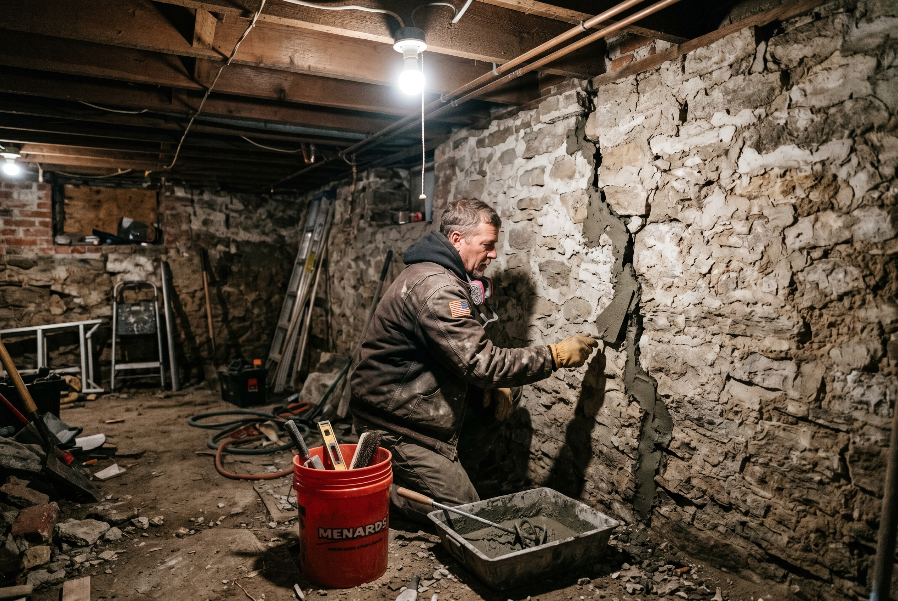

Published October 19, 2026 • By Black Ridge Contracting
Highland Park and Capitol Park are two of the oldest residential neighborhoods in Des Moines. Both grew up around the streetcar lines in the 1890s and early 1900s, and both still feature blocks of original American Foursquare, late Victorian, and early Craftsman homes on larger lots than most of the metro. The architecture is great. The 100 to 130 year old construction is a different conversation.
If you own one of these homes, or you are looking at buying one, here's the practical view from a Central Iowa contractor.
What Makes These Neighborhoods Different
Three things set Highland Park and Capitol Park apart. First, the era. These homes were built when Des Moines was expanding hard along the new streetcar lines, with most construction between 1890 and 1925. The framing is true dimension lumber, the trim is quarter sawn oak, and the original windows are usually double hung wood with weight and pulley balances.
Second, the size. Highland Park and Capitol Park lots are larger than the bungalow neighborhoods, and the homes themselves tend to be 2 to 2.5 stories with taller ceilings and bigger rooms. There's more home to renovate per project than in a Drake bungalow.
Third, the preservation overlay. Portions of both neighborhoods sit within designated historic districts or conservation areas. Exterior work in those zones may require Historic Preservation Commission review. Interior work is generally unregulated.

Original Construction and What to Watch For
Most Highland Park homes have been through three or four sets of owners in the past century, with varying degrees of update quality. What that means in practice:
- Original plaster is usually still in place under whatever drywall or paneling someone added in the 1970s. Removing the drywall to expose original plaster is often worth it.
- Original windows are probably painted shut from a 1980s repaint that didn't bother with the sash channels. Restoring sash function is a $400 to $800 per window job, well worth doing.
- Mechanical systems are on their third or fourth life. Original gas lighting was replaced with knob and tube in the 1920s, which was replaced with cloth wrapped wire in the 1950s, which is now due for a third round.
- Bathrooms are usually undersized for modern expectations because the original homes typically had one bath on the second floor and that was it.
Foundation and Structural Issues
Highland Park and Capitol Park homes mostly sit on stone foundations or early concrete foundations from the 1900s and 1910s. After 100 plus years of Iowa freeze thaw and soil movement, these foundations have settled. Some settlement is normal. Active movement is the concern.

Signs to watch for, in priority order:
- Horizontal cracks in foundation walls. Indicate external soil pressure. Bigger problem than vertical settlement cracks.
- Sloping main floor with one to two inches of dip over ten feet. Indicates joist or beam underperformance.
- Doors that bind in their frames and have gotten worse recently. Active movement.
- Visible step cracking in brick or stone chimneys. Chimney foundations often settle differently from house foundations.
The right fix depends on the failure. Stone foundations get repointed with lime based mortar, never portland cement. Settlement gets stabilized with helical piers or steel beams. Bowing concrete block walls get carbon fiber straps or steel I beams.
Original Trim, Built-Ins, and Millwork
The single most valuable feature of a Highland Park or Capitol Park home is the original millwork. Quarter sawn oak trim, built in china cabinets, window seats, original staircases, beamed ceilings, picture rails. These are not reproducible at any price, which means preserving them adds real long term value.
The right approach is to strip what can be stripped, repair what is damaged, and replace only what is truly beyond repair. Replacement trim almost never matches the original profile because the milling equipment from 1910 isn't standard anymore. Custom matching is possible at local mills but it's expensive.
Kitchens and Baths in These Homes
Kitchens in original Highland Park and Capitol Park homes were designed for service staff, which means they were located at the back of the house, separated from the dining room by a butler's pantry, and not particularly large. Modern homeowners want larger kitchens that flow into living spaces.
The smart move is usually to expand into the original butler's pantry or back hall to create a kitchen with reasonable counter and storage space, while keeping the original dining room intact. Opening walls between kitchen and dining room sometimes works but often removes original character that adds resale value.
Baths in these homes need to be added. Most original homes had one full bath on the second floor. Adding a second full bath, ideally a primary bath, dramatically improves resale. Cost is typically $30,000 to $60,000 depending on plumbing run complexity.
Realistic Cost Ranges
- Cosmetic refresh, paint and floors: $25,000 to $50,000
- Original window restoration with interior storms: $400 to $800 per window
- Plaster repair and skim coat: $4,000 to $9,000 per major room
- Foundation stabilization: $15,000 to $50,000
- Kitchen expansion into pantry: $70,000 to $150,000
- Adding a second full bath: $30,000 to $60,000
- Whole home restoration: $250,000 to $500,000
Working With a Contractor Who Understands These Homes
Highland Park and Capitol Park work needs methods most general contractors don't run regularly. Original plaster, lime mortar, original sash windows, and Historic Preservation Commission paperwork all add complexity. Ask any contractor you interview how many pre 1925 Des Moines homes they have worked on, and whether they have experience with the preservation review process.
At Black Ridge Contracting we work on pre 1925 Central Iowa homes regularly. See our remodeling services or call (515) 219-4654 to set up a walkthrough.
Frequently Asked Questions
American Foursquare, late Victorian, and early Craftsman built roughly 1890 to 1925.
A cosmetic refresh runs $25,000 to $50,000. A whole home restoration is typically $250,000 to $500,000.
Portions are in designated historic districts. Exterior work may require Historic Preservation Commission review.
Foundation settlement and original plaster damage. Both are repairable using methods that respect the construction.